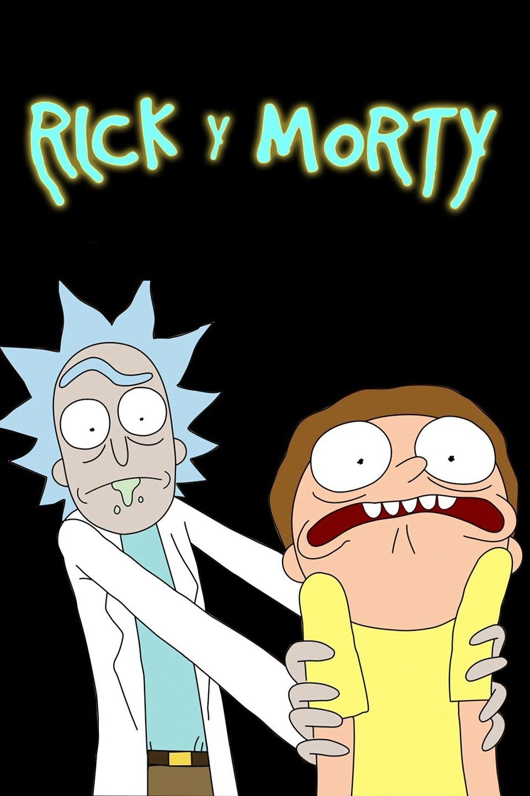

Rick es un brillante científico un tanto borracho que secuestra a su irritable nieto adolescente Morty para vivir aventuras en otros mundos y en dimensiones alternativas.
Protagonistas: Justin Roiland, Chris Parnell, Spencer Grammer
Creado por: Dan Harmon, Justin Roiland